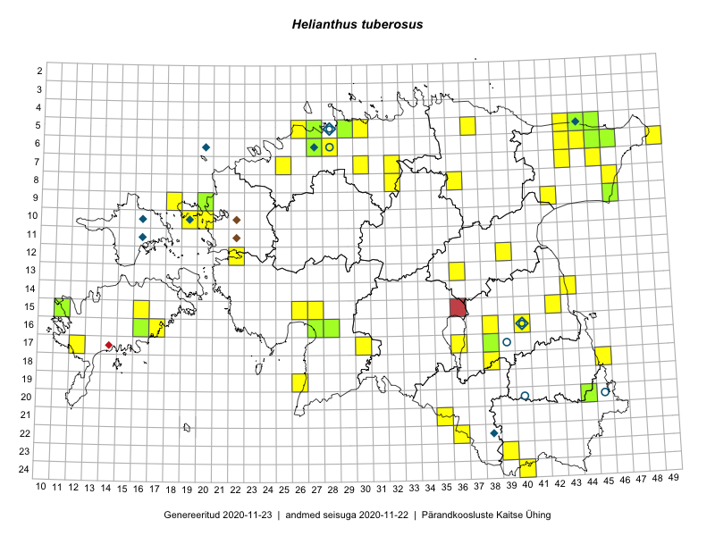

Helianthus tuberosus
Uuendatud: 2016-12-02
Kaardile koondatud taksonid: Helianthus tuberosus L.

Kaart põhineb 55 vaatlusel. Taksonit on leitud 35 ruudust.
Kuvatud viited 20 esimesele andmebaasikirjele, ülejäänud PlutoFis
- Peedu Saar, Liina Oja: 2015-07-15: 06-44: GPS punkt
- Peedu Saar, Eerik Leibak: 2015-07-30: 15-42: GPS punkt
- Peedu Saar, Eerik Leibak: 2015-07-30: 15-42: ala
- Ott Luuk, Peedu Saar: 2015-09-04: 05-30: GPS punkt
- Peedu Saar, Liina Oja: 2015-07-21: 06-44: ala
- Peedu Saar, Eerik Leibak: 2015-08-16: 12-39: GPS punkt
- Peedu Saar, Eerik Leibak: 2015-08-16: 12-39: ala
- Rein Kalamees, Kersti Püssa: 2015-08-15: 05-37: ala
- Rein Kalamees, Kersti Püssa: 2015-08-15: 05-37: GPS punkt
- Eerik Leibak, Thea Kull: 2014-09-11: 06-43: ala
- Ott Luuk: 2015-09-15: 15-11: GPS punkt
- Helle Mäemets, Mare Leis: 2015-06-25: 17-36: ala
- Tõnu Ploompuu, Anna-Grete Rebane, Hanna-Eliisa Luts: 2015-07-20: 10-20: ala
- Tõnu Ploompuu: 2015-06-06: 06-28: ala
- Toomas Kukk: 2016-06-06: 06-28: GPS punkt
- Toomas Kukk, Tiit Hallikma: 2016-06-17: 18-45: ala
- Sander Laherand, Ott Luuk, Susanna Vain: 2016-06-14: 24-40: GPS punkt
- Tiina Elvisto, Eerik Leibak: 2016-07-04: 05-26: ala
- Tiina Elvisto, Eerik Leibak: 2016-07-04: 05-26: GPS punkt
- Liina Oja, Rein Kalamees: 2016-07-07: 10-19: GPS punkt